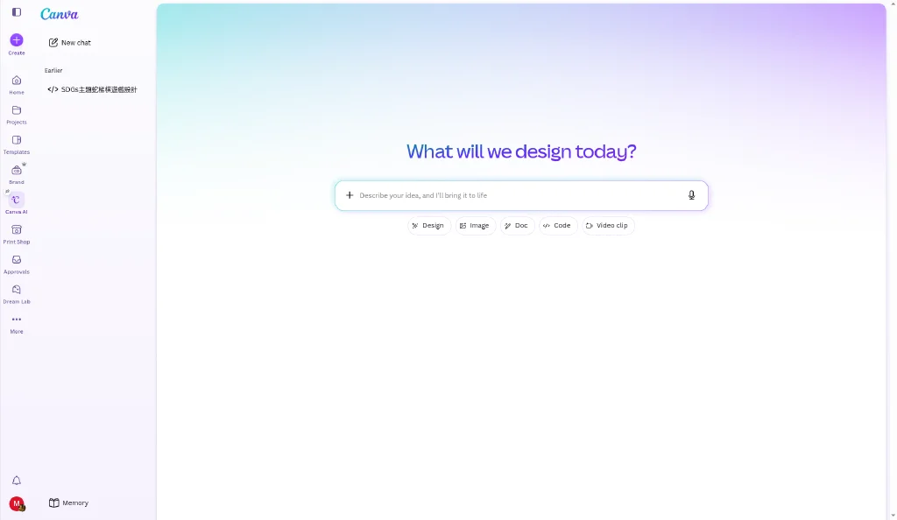
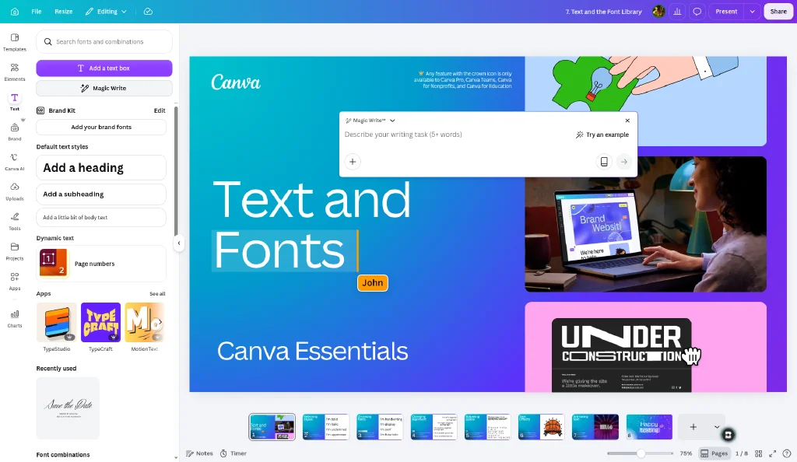
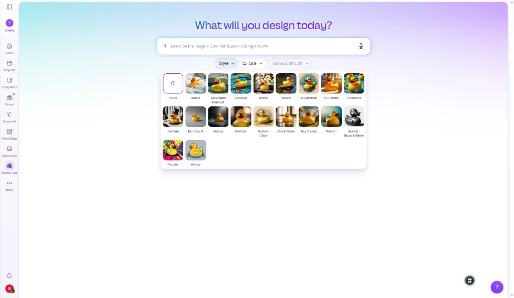
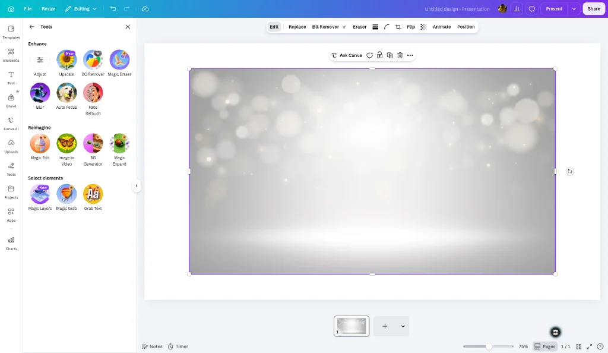
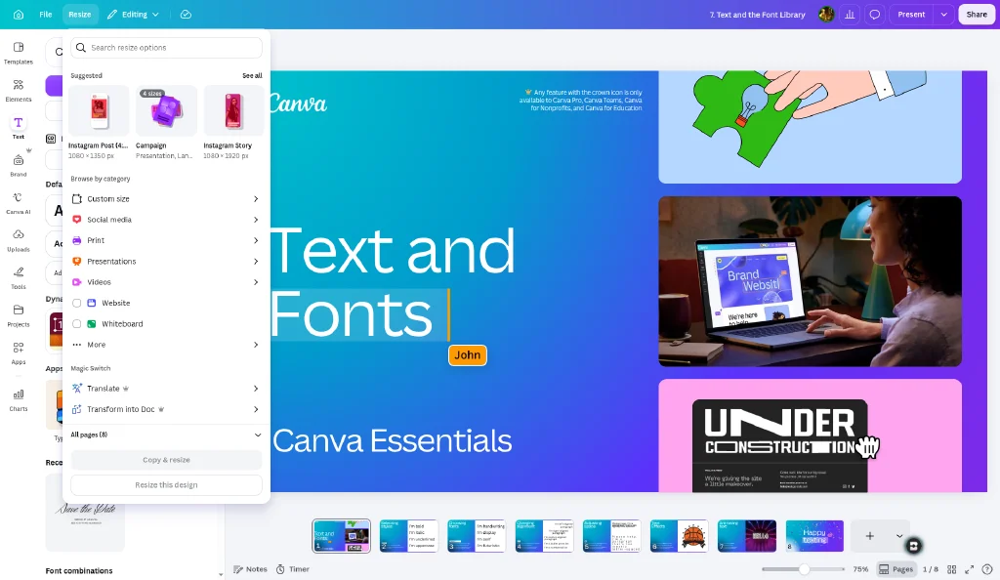
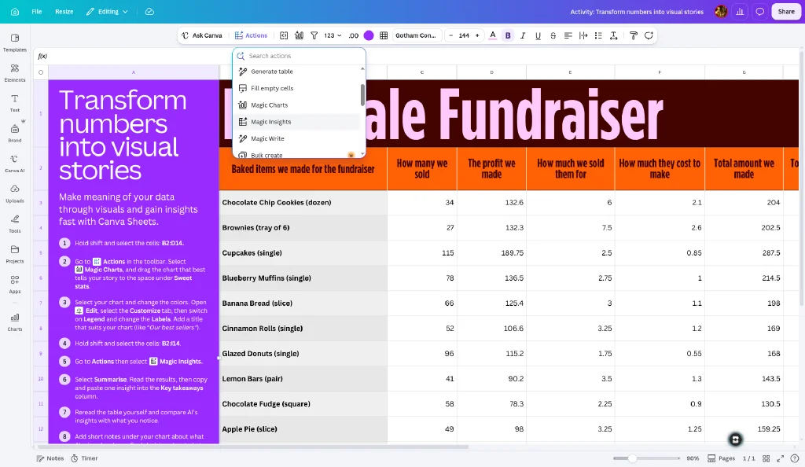
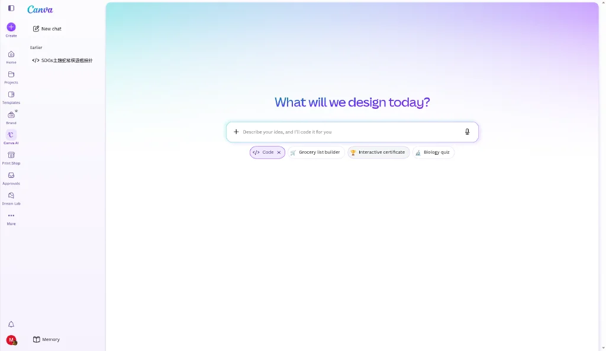

澳門科學館 · 教育員培訓 / 公眾課程
由「識用 Canva」到「用 AI 快手出稿」。全程以 Canva 官方說明中心查證嘅功能為準，附真實介面截圖、成品範例、可下載教學材料、科學館應用案例同六十分鐘實作練習。
操作提示：按 → ← 或底部按鈕翻頁；F 全螢幕；P 列印／存 PDF。本簡報可離線使用。
Agenda
我們唔會逐個掣教。重點係：你手上嘅工作（展板、海報、教材、社交媒體圖），有邊幾個 AI 功能真正幫得上手，同埋幾時唔應該用。
AI 係「初稿機」，唔係「交稿機」。用佢省嘅係開頭嗰 70%。
Canva AI 2.0、文字、圖像、影像編輯、改版、數據、互動六大類。
Standard / Premium / Ultra 三層額度，先搞清楚先唔會中途卡住。
四件事公式：對象、內容、風格、尺寸。
展板、活動海報、教材簡報、社交媒體宣傳圖四條實際流程。
真實 Canva 介面截圖、兩份成品範例、七份可下載教學材料。
60 分鐘動手做一套宣傳組合，10 題自我檢查。
Mindset
做一塊展板，由零到可以交出去，大致分五段。AI 真正幫得上手嘅，係前面三段。
來源：Canva 官方說明中心於 Magic Activities 指引中明確要求「Review AI-generated activities before classroom use … always check for age-appropriateness, accuracy, and cultural sensitivity」；上述三條紅線為本館依此原則自行訂立嘅操作守則 示例。
Overview
「Magic Studio」原本係 Canva 於 2023 年 10 月 4 日推出嘅 AI 功能總稱；而官方現時喺說明中心同設定頁，係以「Magic and AI」同 Canva AI 2.0 做主軸來組織呢批功能。以下按用途分六類，方便記。
Canva AI 2.0 喺編輯器同 AI 對話，直接生成同修改整份設計。另有 Memory Library、Connectors、Web Research。
Magic Write、Translate、Transform into Doc、Magic Activities（教學活動生成）。
Magic Media、Dream Lab、Image to Video、AI Music & Sound Effects、AI Voice。
Magic Edit、Magic Eraser、Magic Grab、Grab Text、Magic Expand、Background Remover、Magic Layers、Image Upscaler。
Magic Switch／Magic Resize（轉尺寸、轉格式、轉語言）、Magic Animate、Style Match。
Canva Sheets 內嘅 Magic Insights、Magic Charts、Magic Formulas；加上 Canva Code、AI Shapes、AI Charts、Form generator。
來源：Canva Help Center「Change access to Magic and AI features」功能清單、「Get started with Canva AI」、「Understanding your AI usage」；Magic Studio 推出日期見 Canva Newsroom「Introducing Magic Studio」。
Reference · 可篩選
呢張表係你日後最常翻返嚟睇嘅一頁。點下面嘅分類掣，可以只睇某一類功能。
| 功能名稱 | 官方用途 | 科學館適用場景 | 額度層級 |
|---|---|---|---|
| Canva AI 2.0 | 喺編輯器以對話方式創建、潤飾、修改整份設計，並保持品牌一致；支援附加檔案、Web Research 取最新資料 | 一句講完需求，直接出活動簡報或海報初稿，再逐句傾住改 | Ultra |
| Memory Library | Canva AI 2.0 功能，毋須由零開始即可更新設計 | 同一系列活動物料，保持風格連貫 | Ultra |
| Magic Design | 根據提示語或你上傳嘅素材，建議可編輯版面（簡報、社交帖文、影片、文件） | 上傳展覽照片，即出一組版面選擇 | Premium |
| Magic Write | 草擬、摘要、擴寫、改寫文字 | 展板說明初稿、活動簡介、新聞稿、社交帖文文案 | Standard |
| Translate | 就地將設計內嘅文字翻譯成其他語言 | 中英雙語展板、對外宣傳物料 | Standard |
| Magic Activities | 依學習目標生成教學活動；官方建議用「Students will be able to [動詞] about [主題]」句式 | 工作坊互動環節、學校團體導覽後嘅延伸活動 | 依方案 |
| Transform into Doc | 將內容轉成文件格式 | 簡報轉成教案文字版、派發用講義 | 依方案 |
| Magic Media | 文字生成圖像／影片 | 抽象科學概念嘅示意圖（黑洞、細胞、電路） | Premium |
| Dream Lab | Canva 嘅 AI 圖像生成器；每個提示語出 4 張，可加參考圖引導風格、可追加指令修改、可 Boost resolution 提升解析度 | 需要統一插畫風格嘅一整套展覽視覺 | Premium |
| Image to Video | 由靜態圖生成影片 | 社交媒體短片、展場循環播放畫面 | Premium |
| AI Music & Sound Effects | 生成音樂同音效 | 展區背景音、短片配樂（免版權煩惱） | Premium |
| AI Voice | AI 語音生成 | 導覽旁白草稿、無障礙語音版說明 | Standard |
| Magic Edit | 塗抹或點選圖中範圍，描述想加／換嘅內容；可選 All、Brush、Click 三種選取方式 | 替換展場照片中嘅雜物、加入道具 | 依方案 |
| Magic Eraser | 刷走圖中唔想要嘅物件 | 清走展場照片入面嘅路障、垃圾桶、臨時告示 | 依方案 |
| Magic Grab | 將圖中物件抽出成可移動、可縮放嘅元素，保留背景 | 將展品由照片抽出重新排版 | 依方案 |
| Grab Text | 將圖片內嘅文字變成可編輯文字框 | 舊展板照片中嘅字直接改版重用 | 依方案 |
| Background Remover | 移除背景，只留主體 | 展品去背，做海報主視覺 | 付費方案 |
| Magic Expand | 擴展圖像畫面範圍 | 橫圖補成直幅，夠位放展板標題 | 依方案 |
| Magic Layers | 分析設計整體結構與元素關係，將文字還原成可編輯文字框、元素分離並保留原版面；屬 Canva Design Model 新能力 | 把舊海報圖檔還原成可改嘅設計檔 | Premium |
| Image Upscaler | 提升圖像解析度 | 低解析舊檔案放大到可印刷尺寸 | Standard |
| Magic Switch / Magic Resize | 一鍵將設計轉成多種尺寸、格式，甚至轉換語言同內容形態 | 一份展覽主視覺 → 海報、IG 方圖、橫額、簡報頁 | 付費方案 |
| Magic Animate | 分析設計內容後自動套用動畫 | 簡報動態效果、社交短片 | 依方案 |
| Style Match | 套用既有風格到新設計 | 新物料對齊館方現有視覺調性 | Premium |
| Canva Sheets | Canva 內嘅試算表，整合 AI 數據工具 | 參觀人數、活動報名、問卷統計 | 依工具 |
| Magic Insights | 將 Canva Sheets 數據即時變成圖表、摘要同公式，毋須人手計算排版；留空提示語會出 data summary | 月度參觀數據摘要、問卷結果重點 | Premium |
| Magic Charts | 喺 Canva Sheets 即時將數據變成圖表，並與表格數據同步更新 | 年報圖表、展板數據視覺化 | Premium |
| Magic Formulas | 由 AI 生成試算表函數同公式 | 唔記得公式寫法時直接用口語描述 | Standard |
| Canva Code | 毋須寫程式即可做互動設計：可建完整互動 Code 設計（landing page、dashboard、portfolio）並發佈成網站；亦可做小測驗、計算機、圖表等互動元素嵌入其他設計重複使用 | 展場互動小測驗、線上教材、數據儀表板 | Premium |
| AI Shapes / AI Charts | 以 AI 生成形狀、3D、圖表、表單等元素 | 科學圖解、流程圖、報名表單 | Premium |
來源：Canva Help Center 各功能說明頁（using-canva-ai、magic-features-admin-controls、using-magic-edit、using-magic-grab、generate-with-dreamlab、magic-activities、canva-sheets、magic-insights、magic-charts、canva-code、ai-access）及 canva.com/pro/magic-resize。「依方案」表示官方未就該項列明單一額度層級，實際以你帳戶方案同管理員設定為準。
Plans & Allowance
Canva 官方明確講：唔係用 credits 制，而係每月一個「共用 AI 額度」（shared monthly AI allowance）。AI 工具分三層，用越強嘅工具，耗得越多。
付費方案（Pro Lite 除外）用呢層唔計入每月額度。例如 Magic Write、Translate、AI Voice、Image Upscaler、Magic Formulas、Photo & Video Animations。
Canva Free 同 Pro Lite 用 Standard 工具仍然會扣額度，但耗得最少。
計入共用額度，較進階。例如 Magic Layers、用 Canva AI 生成設計／圖像、Canva Code 互動、AI 元素（形狀、3D、圖表、表單）、音樂音效生成、表單生成。
用最新模型，耗額度最多。包括 Canva AI 2.0 對話式設計同 用 Canva AI 生成影片片段。
| 方案 | Standard AI | Premium AI（每月上限） | Ultra AI（每月上限） |
|---|---|---|---|
| Canva Free / Pro Lite | 計入額度 | Standard 或 Premium 合共最多 20 次；無法使用 Ultra | |
| Canva Pro / Teams / Nonprofits | 不計入額度 | 最多 200 次 | 或最多 20 次 |
| Canva Business | 不計入額度 | 最多 400 次 | 或最多 40 次 |
| Canva Enterprise | 不計入額度 | 最多 400 次 | 或最多 40 次 |
| Canva for Education | 不計入額度 | 最多 200 次 | 或最多 20 次 |
| Pro / Business 試用期 | Standard 或 Premium 合共最多 20 次 | 不可用 | |
付費及 Nonprofits 方案：按帳單日每月重設（即使年繳亦然，例如年費續期日為 12 月 14 日，每月 14 號重設）。Canva Free：每月 1 號 UTC 時間 00:00 重設。
首頁 → 個人頭像 → Settings → Billing → AI usage，可睇用量同餘額。注意：Canva 嘅額度只涵蓋 Canva 自己嘅 AI 工具，第三方 app 嘅額度要睇該 app。
Teams、Business、Nonprofits、Education、Enterprise —— 每位成員有自己嘅額度，唔會互相共用或合併。
付費方案用 Standard 工具唔會停。Canva Free 用爆後，Standard 同 Premium 工具之間會出現短暫延遲；Ultra 工具唔計入延遲機制，要等下月重設才可再用。
來源：Canva Help Center「Understanding your AI usage」(canva.com/help/ai-access)、「Get started with Canva AI」。
Admin · 教育／團隊帳戶
培訓現場最常出現嘅問題：「我部機點解冇呢個功能？」八成唔係壞機，係方案或管理員權限設定。
Canva Teams / Business：Magic 功能預設對全體成員開啟。
Canva Education：預設只有管理員同教師有權限；學生預設只開放三項 —— Magic Media、Dream Lab、Magic Insights。
首頁 → 個人頭像 → Settings → Controls and permissions → Permissions → Magic and AI，逐項選擇可使用嘅人。權限控制僅限 Teams、Business、Enterprise、Education 嘅 owner 同 admin。
來源：Canva Help Center「Change access to Magic and AI features」、「Get started with Canva AI」。
Prompting · 互動步驟
官方提示技巧歸納為：講具體、拆細複雜需求、繼續對話逐步修正、附加檔案增加脈絡。下面係我們為科學館工作整理嘅四步寫法 示例。點步驟掣睇示範。
AI 唔知你係做緊展板、海報定教案。對象同用途一講，出嚟嘅語氣同資訊量就會對位。
❌ 太空泛：寫一段關於太陽能嘅介紹
✅ 清楚：為澳門科學館常設展一塊展板，寫一段向小學四至六年級參觀者介紹太陽能發電原理嘅說明文字
字數、要包含嘅重點、要避開嘅術語，全部寫出嚟。官方亦建議：複雜需求拆成細步，唔好一次過塞。
✅ 例：約 120 字繁體中文，要提到光電效應同日常應用兩點，避免用「半導體能隙」等專業術語，結尾加一句互動提問
風格、情緒、用色、尺寸、留白位置都可以寫入提示語，尤其做圖嗰陣。
✅ 做圖例：科學館展板插畫風格，扁平化幾何、藍綠色系、淺色背景、留白喺右上角以便放標題，橫向構圖
✅ 做版面例：A1 直幅海報，標題區佔上方三分一，中間放主視覺，底部留位放日期同報名 QR 碼
唔好重新寫一次提示語由頭做。官方明確建議「繼續對話來修正結果」；Dream Lab 亦支援追加指令（官方例子：Make the car blue.）。
✅ 追問例：短一半 語氣再親切少少，似同小朋友講話 標題改用兩行，第二行細一級 保留構圖，淨係換背景色做深藍
來源：Canva Help Center「Get started with Canva AI」之 Tips for better results、「Generate images with Dream Lab」；具體提示語例子為本簡報自行設計 示例。
Compare · 可點擊展開
呢四組功能名字相近、入口相近，但做出嚟嘅結果完全唔同。官方說明中心亦專門寫咗對比。點標題展開睇。
來源：Canva Help Center「Make your photo selectable and customizable with Magic Grab」、「Use Magic Edit to add, replace, and modify photos」之對比段落。
來源：Canva Help Center「Generate images with Dream Lab」；Magic Media 見功能權限清單。
來源：canva.com/pro/magic-resize、Canva 功能權限清單；Magic Layers 定位見 Canva 關於 Magic Layers 之公開發佈說明。
來源：Canva Help Center「Use Magic Charts」、「Analyze and summarize Canva Sheets data with Magic Insights」、「Create and edit spreadsheets in Canva」、「Understanding your AI usage」。
Case 1 / 4 流程示例
情境：一塊用咗三年嘅展板要更新內容，原始設計檔已經搵唔返，手上只有一張印刷廠發嚟嘅 JPG。
| 步 | 用邊個功能 | 做咩 |
|---|---|---|
| 1 | Magic Layers | 上傳舊展板 JPG，還原成可編輯設計 —— 文字變返真正文字框，元素分離但版面不變。 |
| 2 | Magic Write | 把新嘅科學內容草擬成說明文字，指定字數同對象年齡層。 |
| 3 | 人手校訂 必做 | 由內容同事核實所有科學事實、單位、學名、年份。AI 初稿一律當未經核實處理。 |
| 4 | Magic Media 或 Dream Lab | 需要新示意圖時生成；要風格統一就用 Dream Lab 加參考圖。生成圖必須標明為示意圖／插畫。 |
| 5 | Magic Eraser | 若使用現場照片，清走臨時告示、路障等雜物。 |
| 6 | Translate | 就地生成英文版文字，再交由同事審校譯文。 |
| 7 | Image Upscaler | 舊圖解析度不足印刷要求時放大。 |
| 8 | Magic Switch | 同一主視覺另轉出導覽手冊頁同社交媒體方圖。 |
流程中各功能用途以官方說明為據；本流程編排、步驟次序及印刷自檢項目為本簡報自行設計 示例。
Case 2–4 / 4 流程示例
為澳門科學館親子天文觀測夜活動做 A2 直幅海報，深藍夜空色系，標題區在上方，底部留位放日期同報名 QR 碼Students will be able to investigate how air pressure affects a balloon rocket. 官方亦提醒用 Bloom's Taxonomy 嘅強動詞（analyze、compare、evaluate、investigate、design、create、synthesize），每次聚焦一個學習目標。各功能用途依官方說明；Magic Activities 句式同提示限制引自 Canva Help Center「Get better results with Magic Activities」。流程編排與活動主題為本簡報自行設計 示例。
Interface · 真實介面截圖
真實介面截圖（查證日期 2026-10-26；介面會改版）。個人資料已盡量避開；若仍見頭像屬登入狀態。實際按鈕位置以你登入後所見為準。
左側工具列頂部嘅 Canva AI 入口、中央畫布、右側對話面板。重點睇對話係「一路傾一路改」，唔係落一次單。

左邊示範文字生成同「追問修正」；右邊示範圖像生成——留意一次出四張、參考圖位置、以及 Boost resolution。


Interface · 真實介面截圖
真實介面截圖（查證日期 2026-10-26；介面會改版）。個人資料已盡量避開；若仍見頭像屬登入狀態。實際按鈕位置以你登入後所見為準。
同一張展場照片，四個工具四種結果。呢張圖建議喺培訓時停久一陣——係最多同事搞錯嘅地方。

注意每個輸出下面嘅標籤：邊啲直接可用、邊啲要人手微調。

右上角特別標註咗「提示語留空 → 出數據摘要」，呢個係官方明文規定嘅條件。圖表數據為示範用虛構數據。

左邊提示語，右邊成品。生成嘅程式碼你唔需要識讀，亦唔需要改。

Samples · 成品範例
練習最難嘅唔係操作，係「唔知做到幾完整才叫完成」。以下兩份完整成品範例可以下載對照， 兩份都係示例——由本簡報作者撰寫，示範 AI 生成後經人手修訂潤飾嘅合理水準， 並非 Canva AI 嘅實際輸出紀錄。
「夜探星空．親子天文觀測夜」整套物料文案（活動為虛構）：
同一主題「太陽能發電（光電效應）」，寫給三種對象：
附三者分別對照表，同「一稿轉三個對象」嘅追問句。
兩份範例檔案可於下一頁「教學材料下載」取得。
Hands-on · 60 分鐘 練習設計示例
題目：澳門科學館「夜探星空．親子天文觀測夜」活動宣傳。假設資料如下，全部為練習虛構設定。
活動名稱：夜探星空．親子天文觀測夜 ｜ 對象：6–12 歲兒童及家長 ｜ 日期：11 月下旬某星期六 ｜ 時間：19:00–21:30 ｜ 地點：澳門科學館天文館及戶外平台 ｜ 名額：40 組家庭 ｜ 重點：望遠鏡實測、星座辨認、天文館球幕節目
提示語起手式：為澳門科學館親子天文觀測夜活動寫海報文案，繁體中文，約 60 字，對象係 6 至 12 歲小朋友同家長，語氣親切帶少少期待感，要提到用望遠鏡實測同天文館球幕節目
提示語起手式：親子天文觀測夜活動主視覺插畫，一家人用望遠鏡望星空嘅剪影，深藍夜空配暖黃燈光，扁平插畫風格，構圖留白喺上方三分一以便放標題，直幅
用 Magic Design 或 Canva AI 出 A2 直幅海報初稿，再用 Magic Switch 轉出下列尺寸，並逐個檢查版面有冇走位：
同旁邊同事交換作品，按四條標準講一樣做得好、一樣要改：
三秒內睇得出係咩活動、幾時、邊度報名？
語氣同視覺係唔係真係講得入親子家庭？
所有資訊正確？AI 生成圖有標示為插畫？
放埋其他館方物料一齊，係唔係同一家機構出嘅嘢？
練習活動、設定資料、提示語範例及評分標準均為本簡報自行設計 示例，非實際活動資料。所引用功能行為依官方說明。
Check · 互動測驗
揀完答案按「批改」，會即時顯示對錯同解釋。可以重做。
Q1. 想將展場照片裡嘅一件展品抽出嚟搬位，但保留原本背景，應該用邊個功能？
Q2. 手上只剩一張印刷廠發嚟嘅舊海報 JPG，想改返入面嘅文字，最直接用邊個？
Q3. 關於 Canva 嘅 AI 用量制度，以下邊項正確？
Q4. 喺 Canva Education 帳戶，學生預設可以用邊三項功能？
Q5. 用 Magic Insights 想要「數據摘要」（data summary），關鍵條件係？
Q6. 以下邊個屬 Ultra AI 層級（耗額度最多）？
Q7. 官方建議 Magic Activities 嘅提示語句式係？
Q8. 一份展覽主視覺要同時出海報、IG 方圖、Story 直幅同展場橫幅，最省時間嘅做法？
Q9. 同事話「我部機搵唔到 Dream Lab」，以下邊個唔屬官方列出嘅可能成因？
Q10. 用 AI 生成咗一張「深海熱泉生態」示意圖放上展板，以下做法最正確？
Wrap-up
對科學館工作而言：Magic Write（文案初稿）、Magic Switch（一稿多尺寸）、Magic Layers（救返冇原始檔嘅舊設計）。呢三個省嘅時間最實在。
Settings → Billing → AI usage。付費方案用 Magic Write、Translate 等 Standard 工具唔計額度，可以放心用；Ultra 嘅對話式設計要留住用喺真正需要反覆傾嘅項目。
寫得好嘅提示語係可以重用嘅資產。建議開一個共用文件，按用途（展板／海報／教材／社交）分類儲存，全組共用。
AI 唔會因為講錯而尷尬，但館方會。科學事實、數字、學名、年代，一律人手核實後才可出街。
Downloads · 教學材料
七份材料，點掣即可下載。檔案放喺 downloads/ 資料夾，可直接下載。
Markdown 檔用記事本、Word、VS Code 都開得；CSV 檔可直接匯入 Canva Sheets、Excel 或 Google Sheets。
查證／教材抽出日期 2026-10-26（Asia/Macau）
六大類現成提示語模板（展板文字、活動海報、社交文案、教學活動、數據處理、互動元素），方括號換掉就可以用，附常用追問句同留白自填欄。
Markdown 文字檔 · 4.1 KB · 檔名 01-提示語模板庫.md
下載 01-提示語模板庫.md60 分鐘四段練習嘅填寫式工作紙：文案三版本、Dream Lab 追問記錄、五個尺寸轉換檢查表、互評表。可列印派發。
Markdown 文字檔 · 3.4 KB · 檔名 02-實作練習工作紙.md
下載 02-實作練習工作紙.md29 項功能嘅官方用途、科學館適用場景同額度層級。可直接匯入 Canva Sheets、Excel 或 Google Sheets 篩選排序。
CSV 表格 · 3.6 KB · 檔名 03-功能速查表.csv
下載 03-功能速查表.csv九個月虛構參觀數據，用嚟練習 Canva Sheets 嘅 Magic Formulas、Magic Insights 同 Magic Charts。純練習用，非真實數據。
CSV 表格 · 0.4 KB · 檔名 04-示範數據.csv
下載 04-示範數據.csv七大項逐條打勾：科學準確性、圖像誠實性、文字語言、資訊正確、技術規格、館方調性、審批簽核，附三條紅線。
Markdown 文字檔 · 2.6 KB · 檔名 05-出街前檢查清單.md
下載 05-出街前檢查清單.md一整套完成品示範——官網長版、海報中版、IG 短版文案、報名須知、主視覺設計交接說明、六個尺寸輸出清單。
Markdown 文字檔 · 4.0 KB · 檔名 06-成品範例-活動宣傳組合.md
下載 06-成品範例-活動宣傳組合.md同一個科學主題（太陽能光電效應）寫成小學、中學、長者三個版本，附三者分別對照表同轉換用追問句。
Markdown 文字檔 · 3.0 KB · 檔名 07-成品範例-展板說明文字.md
下載 07-成品範例-展板說明文字.mdSources · 查證日期 2026-10-26
本簡報所有功能名稱、功能行為、額度層級同方案限制，均取自下列 Canva 官方頁面。凡本簡報自行設計嘅教學例子均已標示 示例。